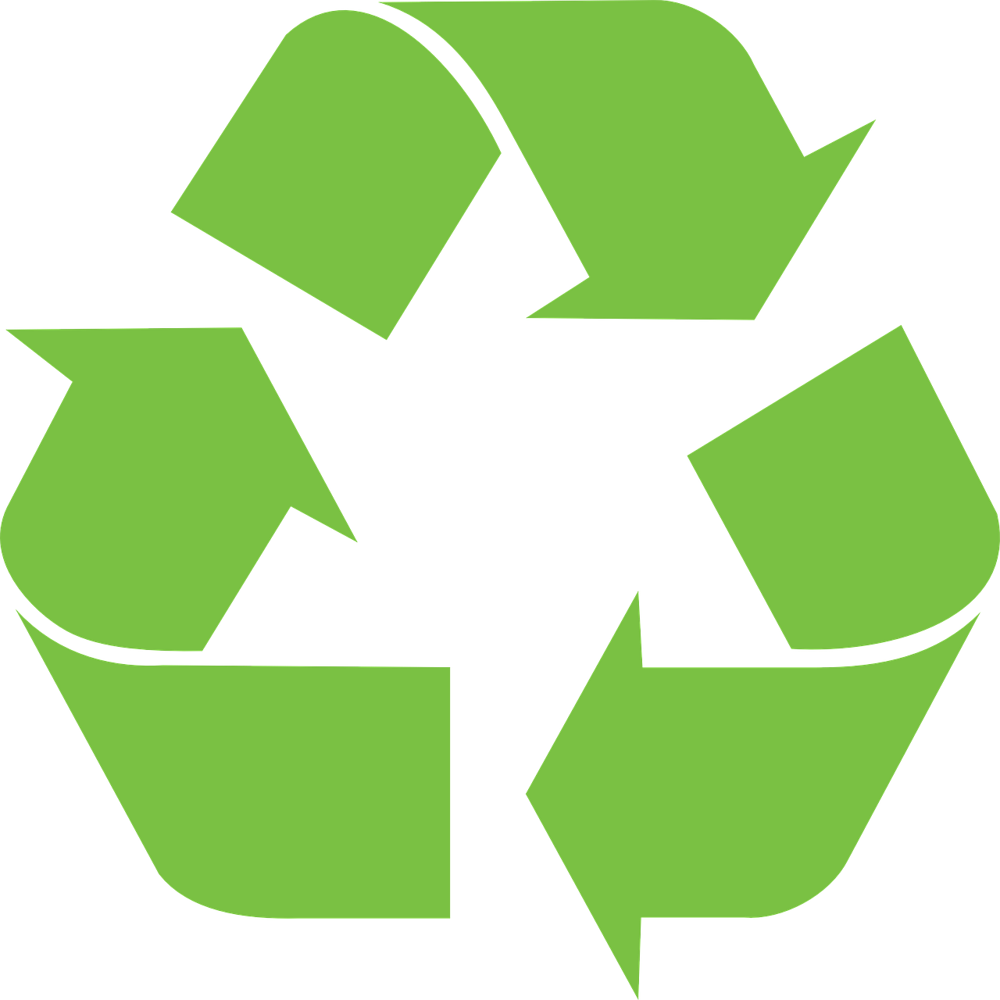

Block-based programming: does it help students learn?
But does block-based programming actually help learning? Does it increase motivation and support students?
Read More


I chose to focus on the Building a Computer section because I have a genuine interest in building...well anything really. I assembled my first working computer when i was 13 using parts from 3 'broken' computers. It is exactly that idea of taking useful parts from one thing and creating something better in another that brought me to learn more about the Raspberry Pi.
I am not about to say that Raspberry Pi can save the world. I do, however, believe that the idea at the core of the Pi is an important one to continually incorporate into our lives. That idea is simple.
Look around you.
There are things around us we use every day, but there are many that you probably don't. You might even throw some of those things away to make room for something new. Instead, consider what you can do with these things. How can you repurpose it? What's inside it? Can you make it work for something else? Can you upgrade it instead of replacing it? If not, can someone else find use out of it?
The raspberry pie has introduced the possibility to equip schools in poor regions with functional, modern, upgradeable computers for a fraction of the cost of traditional computers. This can help give students the opportunity to learn who wouldn't otherwise be able . Whether it's an under-funded inner-city school in the heart of America or a donation funded school in Cambodia, Raspberry Pi presents an opportunity for access to new technology where there was none before.

A very large and growing concern is that of electronics waste. It is all too common for an old electronic device to end up in a landfill because it was too old to function. Raspberry Pi can help by reusing a lot of the old parts. The keyboard, monitor, mouse, speakers, hard drive, and even more are all reusable and will not affect performance of a new machine. The more of these parts that are reused, the less these parts will end up in a landfill.
How can you interest your students in robotics? What about AI? Facial recognition? Computer programming? Home automation? Console emulation? 3d printing? Will you need an expensive, specialized computer for each of these? No, the Raspberry Pi is capable of all these and so much more. In fact, if what you need is a platform that can adapt to your needs, and not the other way around, consider the Pi..


But does block-based programming actually help learning? Does it increase motivation and support students?
Read MoreThere are plenty of great Raspberry Pi fan sites, tutorials, repositories, YouTube channels, and other resources on the web. Here are my top 10 favorite Raspberry Pi blogs, in no particular order.
Read MoreTurn a low end Raspberry Pi into a dedicated webserver to host your next blog.
Read More
Doing this activity I really only found two points I would like to see improved upon.
Allow the students to watch the videos in the original language (perhaps with subtitles). The text to speech program used detracted from the videos more than it helped. The sound is, of course, one issue, but they rhythm is perhaps the biggest concern. It is so unnatural that it becomes distracting and often there were glitches with speed. https://speechelo.com/ is very popular right now (claiming use of an AI generated voice-over at 47$) while https://ttsmp3.com/ isn’t quite as good, but free and easy to use https://awesomeopensource.com/project/mozilla/TTS is also available as an open-source repo on GitHub.
I would have liked to include information about the Right to Repair movement. I thought it was included, but when I went back, I didn’t see it. I think it’s an important inclusion because of how it could affect systems like the Raspberry Pi in the future. Apple has been at the helm of fighting against consumers ability to repair their own products and has initiated legal action to businesses for being a part of the self-repair business. I feel that it’s roughly equivalent
{
"title": "Block-based programming: does it help students learn?",
"source": "https://www.raspberrypi.org/blog/block-based-programming-does-it-help-students-learn-research-seminar/",
"copyright": "Sue Sentence",
"description": "A good article about the efficacy of using visual scripting languages.",
"prerequisite": "a familiarity of the idea of scratch would be sufficient.",
"outcome": "This article gives insight about the efficacy and response of block code as well as ways to improve it."
},

{
"title": "Host Your Own Blog From a $25 Raspberry Pi Computer",
"source": "https://www.instructables.com/Host-your-own-blog-from-a-25-Raspberry-Pi-compute/",
"copyright": "Amos Lightnin",
"description": "Instructional article about turning a Raspberry Pi into a web server",
"prerequisite": "familiarity with Raspberry Pi and website hosting would be helpful",
"outcome": "Even without prerequsite knowledge, this article takes the reader from bare Pi to functioning web server"
},
{
"title": "Raspberry Pi Cyberdeck Shares Space with Intel NUC",
"source": "https://www.tomshardware.com/news/raspberry-pi-cyberdeck-shares-space-with-intel-nuc",
"copyright": "Ash Puckett",
"description": "A very neat 'cyberdeck' project that showcases how customizable Pis are. ",
"prerequisite": "None, this is just a project showcase. ",
"outcome": "This article will ignite the retro creativitiy within us. Often inspiritation is more valuable than information. "
},
{
{
"title": "Onion Pi",
"source": "https://learn.adafruit.com/onion-pi/overview",
"copyright": "Laday Ada",
"description": "Ensure privacy and security with a tor enabled Pi router",
"prerequisite": "A knowledge of tor and linux would be helpful. ",
"outcome": "The reader can create their own privacy shield to ensure their online data and identity remain secure. "
},
{
"title": "Teachers & educators",
"source": "https://www.raspberrypi.org/teach/",
"copyright": "Raspberrypi.org",
"description": "A collection of immensly useful information and links for any technology educator",
"prerequisite": "teaching experience and technology familiarity is a plus",
"outcome": "Any teacher can improve the way they teach and this is just one resource that offers many ways to do that. Utilizing these resources will make teaching programming much simplier. "
}